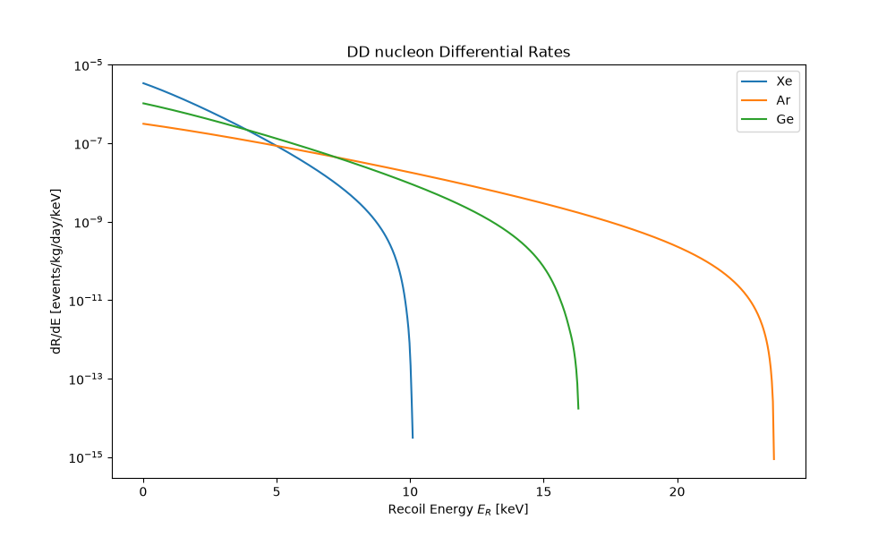
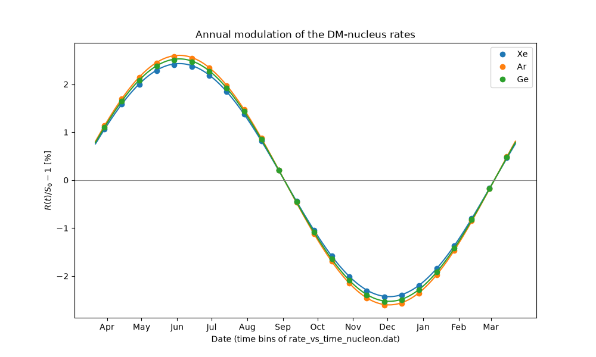
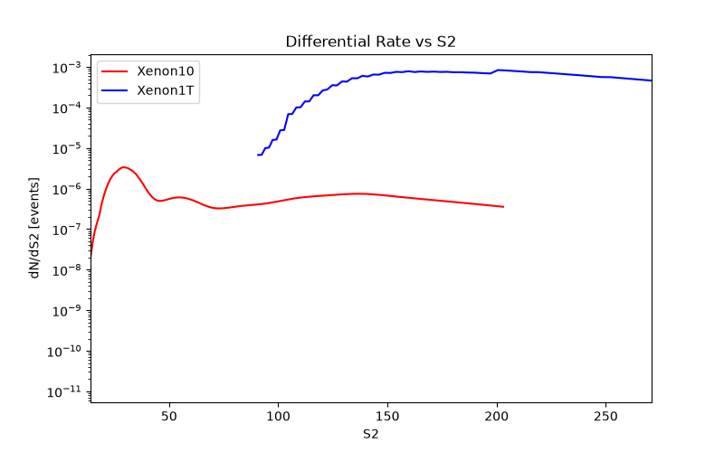
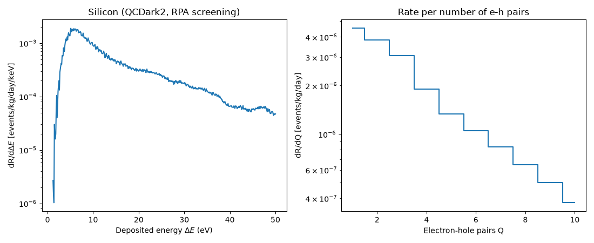

Note
Go to the end to download the full example code.
Direct Detection Tutorial#
Compute direct detection signal and limits for both nuclear and electronic recoils.
1. Nuclear Recoils with RAPIDD and LZ/PICO-60 limits#
For nuclear recoil interactions, MadDM compares the model with the upper limits from LZ 2024 and PICO-60 (and, with
xlzd_limits in the maddm_card.dat, with the projected XLZD sensitivity), and uses the
RAPIDD module to evaluate the differential recoil spectra.
The LZ limits are published for reference models (an isoscalar SI coupling, SD couplings to neutrons only or to protons
only), while a model couples to protons and neutrons, whose amplitudes interfere in the nucleus. MadDM therefore compares
with the LZ limits the equivalent cross sections SigmaN_SI_eq, SigmaN_SD_n_eq and SigmaN_SD_p_eq: the cross
section of the reference model of each limit that gives the same expected number of events in LZ as the full model
(SI and SD couplings, protons and neutrons, with the chiral EFT structure factors and their two-body currents).
Comparing the proton and neutron cross sections separately with the limits would ignore the interference: it can exclude
models whose xenon signal cancels, or (for SI couplings to protons only) be too aggressive by \((A/Z)^2 \simeq 6\),
because the SI limit is isoscalar. See the direct detection section of the documentation for the details and the limits of
validity (the comparison is exact when the spectrum has the same shape as the reference one).
Example with a simplified scalar-mediated DM model#
First, import the model and define the dark matter particle. Generally, for DMsimp models, you can choose between Xr (real scalar DM), Xc (complex scalar DM) and Xd (Dirac spinor DM):
MadDM> import model DMsimp_s_spin0
MadDM> define darkmatter xd
Then, generate the direct detection processes with:
MadDM> generate direct
At this point, you can set the parameter values of the model, stored in param_card_orig.dat, by pressing 1, but this can also be done when launching the process.
Next, create the process folder. In this case, we call it DD_NR_spin0, but you can choose any name you like. Then launch the process:
MadDM> output DD_NR_spin0
MadDM> launch DD_NR_spin0
Select to run the direct_nucleon module (but it should be already ON) by entering:
MadDM> direct_nucleon = ON
If your model has both DM-nucleon and DM-electron interactions, you can set both direct_nucleon and direct_electron modules to ON,
and you will receive results for both types of interactions considered separately.
You can set the model parameters in the param_card.dat by pressing 7, or by editing the file directly in the process folder (in this case DD_NR_spin0/Cards/param_card.dat).
You can set the MadDM parameters (such as the halo parameters, the targets and much more) in the maddm_card.dat by pressing 8,
or by editing the file directly in the process folder (in this case DD_NR_spin0/Cards/maddm_card.dat).
Limits only, or limits and rates#
The maddm_card.dat parameter direct_mode sets what direct_nucleon and direct_electron compute. At the launch
prompt you can set it with a shortcut:
MadDM> set limit_and_rates
MadDM> set limit
limit_and_rates(default): the cross sections and the comparison with the exclusion limits, plus the recoil spectra of the selected targets computed with RAPIDD (dRdE_nucleon.dat,dRdE_electron.dat) and, for DM-electron scattering in xenon, the XENON10 and XENON1T S2 spectra and limits;limit: only the cross sections and the comparison with the exclusion limits (LZ 2024, PICO-60 and XENONnT), without recoil spectra. It is faster, for instance in scans. The equivalent cross sections compared with LZ are computed in both modes.
The targets of the recoil spectra are chosen in the maddm_card.dat (comma-separated lists, one column per target in the
output files):
MadDM> set direct_nucleon_targets xe, ge, ar, f
MadDM> set direct_electron_targets xe, ar, si
DM-nucleon scattering supports xenon (xe), germanium (ge), argon (ar) and fluorine (f); DM-electron
scattering supports xenon, argon and silicon (si, crystal response of QCDark2, in its own files). Both lists are xe by
default. Argon has no spin-dependent rate (no nuclear spin);
fluorine is the target of the PICO-60 bubble chamber (C3F8) and is dominated by the proton spin.
The XENON10 and XENON1T results need xe among the electron targets. With limit_and_rates you can also compute the
annual modulation of the rates (set direct_modulation True, see below).
Once you are all set, you can run the process by pressing Enter. This module will first evaluate the DM-nucleon cross sections and the
equivalent cross sections and compare them against the experimental limits from LZ 2024 and PICO-60.
Next, with direct_mode = limit_and_rates, it will use RAPIDD to compute the differential nuclear recoil rates.
After running the above commands, the output will look like:
INFO: MadDM Results
INFO: Local Galactic halo (SHM): rho = 0.3 GeV/cm^3, vMP = 238 km/s, vescape = 544 km/s
INFO:
****** Direct detection [cm^2]:
INFO: SigmaN_*_eq: DM-nucleon cross sections equivalent to the model in LZ (same expected signal as the reference model of each LZ limit; RAPIDD chiral EFT, p-n interference and two-body currents included)
INFO: SigmaN_SI_eq All DM = 6.41e-48 ALLOWED LZ2024 ul = 6.48e-47
INFO: SigmaN_SD_n_eq All DM = 9.84e-43 ALLOWED LZ2024 ul = 7.59e-42
INFO: SigmaN_SD_p_eq All DM = 3.03e-41 ALLOWED LZ2024 ul = 2.33e-40
INFO: SigmaN_SD_p All DM = 0.00e+00 ALLOWED Pico60 (2019) ul = 4.16e-41
INFO: sigma_p and sigma_n (information only: compared separately with the LZ limits they ignore the p-n interference; SD_p is compared with PICO-60 above):
INFO: SigmaN_SI_p All DM = 6.16e-48
INFO: SigmaN_SI_n All DM = 6.14e-48
INFO: SigmaN_SD_n All DM = 0.00e+00
INFO: Neutrino fog (xenon): reference boundary, NOT an exclusion limit. https://github.com/cajohare/NeutrinoFog; C. A. J. O'Hare, Phys. Rev. Lett. 127, 251802 (2021), arXiv:2109.03116
INFO: Rescaled from rho = 0.3 GeV/cm^3 (published tables) to rhoDM = 0.3 GeV/cm^3.
INFO: neutrino_fog_SI = 4.3291631542e-48 # cm^2; -1 means unavailable
INFO: neutrino_fog_SD_p = 1.9474339879e-40 # cm^2; -1 means unavailable
INFO: neutrino_fog_SD_n = 1.0584409940e-42 # cm^2; -1 means unavailable
INFO: Recoil spectra: dRdE_nucleon.dat in /Users/yourname/yourprocessfolder/DD_NR_spin0/output/run_01
INFO:
INFO: Results written in: /Users/yourname/yourprocessfolder/DD_NR_spin0/output/run_01/MadDM_results.txt
quit
where All DM refers to the DM-nucleon cross sections in case the DM particle contributes to the entire dark matter density of the universe
(default model parameters, with a DM mass of 10 GeV).
In the last column, you can see the upper limits (ul) from the LZ 2024 and PICO-60 experiments, which are compared against the
equivalent cross sections (LZ) and the SD proton cross section (PICO-60), returning the status of the model (ALLOWED or EXCLUDED).
This model has only a scalar (SI) coupling: SigmaN_SD_n_eq and SigmaN_SD_p_eq are not zero because they are the SI signal
of the model seen through the SD reference models (LZ sees the sum of the SI and SD signals), and they give approximately the same verdict as
SigmaN_SI_eq (here sigma_eq/limit = 0.10 for SI and 0.13 for SD: different LZ curves and spectral shapes). The proton and neutron cross sections are given for information, without a verdict.
The xenon neutrino fog is a reference boundary, not an exclusion limit. DD_limits.pdf in the run folder shows the equivalent cross sections
of the run against the LZ limits, the SD proton cross section against the PICO-60 limit, and the neutrino fog as a function of the DM mass.
Results#
The results of each run will be stored inside the process folder you created, whose path is shown in the last line of the output.
Each time you launch the same process, MadDM creates a new folder output/run_XX within the process folder.
In this folder, you will find the cross sections in a file named MadDM_results.txt.
With direct_mode = limit_and_rates (the default; type set limit to compute only the exclusion limits) you can also find
the differential recoil rates in the dRdE_nucleon.dat file, which contains the differential recoil spectra vs energy
for DM-nucleon interactions, one column per target chosen with direct_nucleon_targets in the maddm_card.dat
(one or more of xe, ge, ar, f; default xe). The spectra are computed with the chiral EFT structure factors
(dd_nuclear_responses = chiral_eft, the default; nreft gives the one-body NREFT responses with the
\(\mathcal O_1\) and \(\mathcal O_4\) couplings only). The file used below was produced with set direct_nucleon_targets xe, ge, ar.
Below is an example of how to plot the differential rates:
import matplotlib.pyplot as plt
import numpy as np
def plot_dd_rates(dd_file):
"""
Plots the direct detection rates of all the targets in dRdE_nucleon.dat.
Parameters:
dd_file (str): Path to the dRdE_nucleon.dat file.
"""
# the header gives the targets: E_R [keV] drde_<target> [events/kg/day/keV] ...
with open(dd_file) as file:
targets = [name[len('drde_'):] for name in file.readline().split() if name.startswith('drde_')]
data = np.loadtxt(dd_file)
# Plotting
plt.figure(figsize=(10, 6))
for i, target in enumerate(targets):
rates = data[:, i + 1]
mask = rates > 0 # the rate vanishes above the kinematic endpoint of each target
plt.plot(data[mask, 0], rates[mask], label=target)
plt.xlabel('Recoil Energy $E_R$ [keV]')
plt.ylabel('dR/dE [$\\mathrm{events / kg / day / keV}$]')
plt.title('DD nucleon Differential Rates')
plt.yscale('log') # y-axis in log scale
plt.legend()
plt.show()
plot_dd_rates('./plot_data/dRdE_nucleon.dat')

Annual modulation of the rates#
The rates above use the annual-average halo, with the Earth velocity vector of March 9 (Eq. 12 of
arXiv:2105.00599). Since the Earth moves around the Sun, the DM velocity
distribution seen by the detector changes during the year, and so do the SI and SD rates. To compute this annual
modulation, set direct_modulation to True in the maddm_card.dat (press 8, or use set) before running:
MadDM> launch DD_NR_spin0
MadDM> direct_nucleon = ON
MadDM> set direct_nucleon_targets xe, ge, ar
MadDM> set direct_modulation True
MadDM> set day_bins 24
The year (365.24 days) is divided in day_bins bins (default 12) of width \(\Delta t = 365.24/N_\mathrm{bins}\)
days, and RAPIDD computes the halo and the recoil spectrum of each target at the bin centers
\(t_i = (i + 1/2)\,\Delta t\), in days since March 22. The Earth velocity has modulus vEarth_mod (29.8 km/s
by default) and the time-dependent direction of Eq. 11 of arXiv:2105.00599; vMP, vescape, vSun_* and
rhoDM are those of the card, as for the annual-average rates. Each bin needs its own halo table, so the run is
slower for many bins. The modulation needs direct_mode = limit_and_rates; the equivalent cross sections and the
exclusion limits do not change (they always use the annual-average halo).
The run folder then also contains:
rate_vs_time_nucleon.dat: \(t_i\) [days since March 22], \(\Delta t\) [days] and, for each target,R_<target>\(= \Delta t \int \frac{dR}{dE}(t_i)\, dE\) [events/kg per time bin]. The integral covers the whole energy grid ofdRdE_nucleon.dat(0.01-40 keV), without threshold or efficiency;dRdE_modulation_nucleon.dat: \(E_R\) [keV] and, for each target, the spectrum averaged over the yeardrde_<target>_avg[events/kg/day/keV] and integrated over the yeardrde_<target>_year[events/kg/yr/keV]. The averaged spectrum is close to the one ofdRdE_nucleon.dat(here the total rates agree within 0.3%), except in the tail near the kinematic endpoint, which depends on the maximal DM velocity in the detector frame and is therefore set by the fastest time bins.
The same flag gives the modulation of the DM-electron rates (direct_electron, see below), in
rate_vs_time_electron.dat and dRdE_modulation_electron.dat, with the same format.
The files used below were produced with the commands above (default model parameters, 10 GeV DM). The rate of each time bin is fitted with \(R(t) = S_0 + S_m \cos[2\pi (t - t_\mathrm{max})/T]\), with \(T\) = 1 year, which gives the modulated fraction \(S_m/S_0\) and the date of the maximum:
import datetime
import matplotlib.pyplot as plt
import numpy as np
YEAR_DAYS = 365.24
T0_DATE = datetime.date(2018, 3, 22) # t = 0 of rate_vs_time_*.dat
def plot_dd_modulation(rate_file):
"""
Plots the relative annual modulation of the rate of each target in rate_vs_time_nucleon.dat
(or rate_vs_time_electron.dat) and fits it with S0 + Sm cos(2 pi (t - t_max)/year).
Parameters:
rate_file (str): Path to the rate_vs_time_*.dat file.
"""
# header: t [days since 22-03-2018] dt [days] R_<target> [events/kg/dt] ...
with open(rate_file) as file:
targets = [name[len('R_'):] for name in file.readline().split() if name.startswith('R_')]
data = np.loadtxt(rate_file, ndmin=2)
t, dt = data[:, 0], data[:, 1]
omega = 2 * np.pi / YEAR_DAYS
t_fine = np.linspace(0, YEAR_DAYS, 400)
plt.figure(figsize=(10, 6))
for i, target in enumerate(targets):
rate = data[:, i + 2] / dt # events/kg/day in each time bin
# linear least squares: S0 + a cos(omega t) + b sin(omega t), with Sm = hypot(a, b)
basis = np.column_stack([np.ones_like(t), np.cos(omega * t), np.sin(omega * t)])
S0, a, b = np.linalg.lstsq(basis, rate, rcond=None)[0]
Sm, t_max = np.hypot(a, b), (np.arctan2(b, a) / omega) % YEAR_DAYS
date_max = T0_DATE + datetime.timedelta(days=float(t_max))
print(f'{target}: S0 = {S0:.3e} events/kg/day, Sm/S0 = {100 * Sm / S0:.2f} %, '
f'maximum on {date_max:%B} {date_max.day}')
line, = plt.plot(t, 100 * (rate / S0 - 1), 'o', label=target)
plt.plot(t_fine, 100 * Sm / S0 * np.cos(omega * (t_fine - t_max)), color=line.get_color())
# first day of each month on the time axis
months = [datetime.date(2018 + (3 + m) // 12, (3 + m) % 12 + 1, 1) for m in range(12)]
plt.xticks([(m - T0_DATE).days for m in months], [f'{m:%b}' for m in months])
plt.axhline(0, color='gray', linewidth=0.8)
plt.xlabel('Date (time bins of rate_vs_time_nucleon.dat)')
plt.ylabel('$R(t)/S_0 - 1$ [%]')
plt.title('Annual modulation of the DM-nucleus rates')
plt.legend()
plt.show()
plot_dd_modulation('./plot_data/rate_vs_time_nucleon.dat')

Xe: S0 = 5.055e-06 events/kg/day, Sm/S0 = 2.43 %, maximum on June 2
Ar: S0 = 1.169e-06 events/kg/day, Sm/S0 = 2.60 %, maximum on June 2
Ge: S0 = 2.557e-06 events/kg/day, Sm/S0 = 2.53 %, maximum on June 2
The rate peaks at the beginning of June, when the Earth velocity is aligned with the one of the Sun, and the modulated
fraction is a few percent for this light DM. The year-integrated spectrum of dRdE_modulation_nucleon.dat gives
the expected number of events of an exposure in kg yr, for instance above an energy threshold:
def events_per_exposure(spectrum_file, threshold_keV=1.0, exposure_kg_yr=1.0e3):
"""
Number of events above threshold_keV for an exposure in kg yr, from the drde_<target>_year columns
of dRdE_modulation_nucleon.dat (or dRdE_modulation_electron.dat), without efficiency.
"""
# header: E [keV] drde_<target>_avg [events/kg/day/keV] ... drde_<target>_year [events/kg/yr/keV] ...
with open(spectrum_file) as file:
names = file.readline().split()[1:]
columns = [name for name in names if name.startswith('drde_')]
data = np.loadtxt(spectrum_file)
energy = data[:, 0]
above = energy >= threshold_keV
for k, name in enumerate(columns):
if name.endswith('_year'):
target = name[len('drde_'):-len('_year')]
spectrum, e = data[above, k + 1], energy[above]
n_events = exposure_kg_yr * np.sum(np.diff(e) * (spectrum[1:] + spectrum[:-1]) / 2) # trapezoidal rule
print(f'{target}: {n_events:.3e} events above {threshold_keV} keV in {exposure_kg_yr:g} kg yr')
events_per_exposure('./plot_data/dRdE_modulation_nucleon.dat', threshold_keV=1.0, exposure_kg_yr=1.0e3)
Xe: 9.125e-01 events above 1.0 keV in 1000 kg yr
Ar: 3.242e-01 events above 1.0 keV in 1000 kg yr
Ge: 6.129e-01 events above 1.0 keV in 1000 kg yr
2. Electronic Recoils with XENONnT and XENON10 limits#
MadDM also supports electronic recoil constraints: the reference DM-electron cross section is compared with the XENONnT S2-only upper limit and with the XENON10 S2-only data. These are particularly relevant for models with sub-GeV DM that interact with electrons. With this module you can compute the DM-electron recoil rates and constrain the Lagrangian parameters, or the cross section.
Example with a simplified scalar-mediated DM model#
First, import the model and define the dark matter particle. Generally, for DMsimp models, you can choose between Xr (real scalar DM), Xc (complex scalar DM) and Xd (Dirac spinor DM). Then, generate the direct detection processes with:
MadDM> import model eDMsimp_s_spin0
MadDM> define darkmatter xd
MadDM> generate direct
At this point, you can set the parameter values of the model, stored in param_card_orig.dat, by pressing 1, but this can also be done when launching the process.
Next, create the process folder. In this case, we call it DD_ER_spin0, but you can choose any name you like. Then launch the process:
MadDM> output DD_ER_spin0
MadDM> launch DD_ER_spin0
Select to run the direct_electron module (but it should be already ON) by entering:
MadDM> direct_electron = ON
If your model has both DM-nucleon and DM-electron interactions, you can set both direct_nucleon and direct_electron modules to ON,
and you will receive results for both types of interactions considered separately.
You can set the model parameters in the param_card.dat by pressing 7, or by editing the file directly in the process folder (in this case DD_ER_spin0/Cards/param_card.dat).
You can set the MadDM parameters (such as the halo parameters, the targets and much more) in the maddm_card.dat by pressing 8,
or by editing the file directly in the process folder (in this case DD_ER_spin0/Cards/maddm_card.dat).
Note that in the direct_electron module, if the DM particle has a mass above 1 GeV, it will be ignored by default.
To change this behavior, set direct_electron_mode to always in the maddm_card.dat file, which you can do by pressing 8 after launching the process.
Once you are all set, you can run the process by pressing Enter. This module will compute the reference cross section \(\bar\sigma_e\)
and compare it with the XENONnT limit, both as published and rescaled to the RAPIDD atomic responses, and, in their mass range, with the
DAMIC-M limit (published and rescaled to the RAPIDD silicon response) and the DarkSide-50 limit; with direct_mode = limit_and_rates
it will also compute the DM-electron recoil rates and compare them with the XENON10 and XENON1T S2-only data.
Here we also ask for the silicon rates, with set direct_electron_targets xe, ar, si.
After running the above commands, the output will look like:
INFO: MadDM Results
INFO: Local Galactic halo (SHM): rho = 0.3 GeV/cm^3, vMP = 238 km/s, vescape = 544 km/s
INFO:
****** Direct detection - electron recoil [cm^2]:
INFO: Sigma_e All DM = 3.23e-43 ALLOWED XENONnT ul = 1.54e-41
INFO: Sigma_e (rescaled) All DM = 3.23e-43 ALLOWED XENONnT ul = 3.01e-41
INFO: Sigma_e All DM = 3.23e-43 ALLOWED DAMIC-M ul = 1.59e-37
INFO: Sigma_e All DM = 3.23e-43 ALLOWED DAMIC-M; RAPIDD (QCDark2) ul = 2.02e-37
INFO: Sigma_e All DM = 3.23e-43 ALLOWED DarkSide-50 ul = 2.73e-39
INFO: Sigma_e All DM = 3.23e-43 ALLOWED XENON10 ul = 4.73e-38
INFO: Sigma_e All DM = 3.23e-43 ALLOWED XENON1T ul = 3.04e-40
INFO: XENON10, XENON1T: not the strongest constraints, but the only ones computed from the recoil spectrum of the model (valid for any operator); the other limits are published curves for sigma_e (heavy mediator, F_DM = 1).
INFO: Recoil spectra: dRdE_electron.dat, dRdS2_electron_XENON10.dat, dRdS2_electron_XENON1T.dat, dRdE_electron_Si.dat, dRdQ_electron_Si.dat in /Users/yourname/yourprocessfolder/DD_ER_spin0/output/run_01
INFO:
INFO: Results written in: /Users/yourname/yourprocessfolder/DD_ER_spin0/output/run_01/MadDM_results.txt
where All DM refers to the reference DM-electron cross section in case the DM particle contributes to the entire dark matter density of the universe,
ALLOWED indicates that the model is consistent with the corresponding upper limit, shown in the last column. The published and rescaled
limits of XENONnT and DAMIC-M are two conventions for the same data (the rescaled ones use the RAPIDD atomic and silicon responses of the rates). The XENON10 limit is the cross section
for which the p-value of the most constraining S2 bin falls below 0.1; the p-value itself is written in MadDM_results.txt.
The XENON1T limit is defined in the same way from the XENON1T S2-only data (one region of interest per DM mass,
with the published background); both p-values are written in MadDM_results.txt.
XENON10 and XENON1T are weaker than XENONnT, DAMIC-M and DarkSide-50, but they are the only tests computed from the
recoil spectrum of the model, valid for any operator; the other limits are published curves for sigma_e with a heavy mediator.
Results#
The results of each run will be stored inside the process folder you created, whose path is shown in the last line of the output.
Each time you launch the same process, MadDM creates a new folder output/run_XX within the process folder.
In this folder, you will find the results, such as the cross section and p-values, in a file named MadDM_results.txt.
The raw output of the Fortran module of MadDM, such as the DM mass and the effective DM-electron couplings, is in the maddm.out file,
and the XENON10 signal in each S2 bin is in signal_e_recoil.dat.
With direct_mode = limit_and_rates (the default) you can also find the differential recoil spectra vs energy in dRdE_electron.dat
(for each atom of direct_electron_targets, xe and/or ar, the rate summed over the shells and then the rate of each shell)
and, for Xenon, the number of events vs scintillation signal in dRdS2_electron_XENON10.dat and dRdS2_electron_XENON1T.dat.
With direct_mode = limit (set limit) only sigma_e and the published limits (XENONnT, DAMIC-M, DarkSide-50) are computed: the XENON10 and XENON1T results need the Xenon rates.
For silicon (si) the rate is in dRdE_electron_Si.dat, versus the deposited energy (0.1 to 50 eV), and in dRdQ_electron_Si.dat,
per number of electron-hole pairs (Ramanathan-Kurinsky ionization probabilities at 100 K), the quantity measured by skipper-CCD
experiments such as DAMIC-M and SENSEI.
The files used below were produced with set direct_electron_targets xe, ar, si.
Below is an example of how to plot the differential rates and number of events vs scintillation signal for electronic recoils:
import numpy as np
import matplotlib.pyplot as plt
def plot_dRdE_er(file_path):
"""
Read and plot the dR/dE spectrum (all shells) of each target in dRdE_electron.dat.
Parameters:
file_path (str): Path to the dRdE_electron.dat file.
"""
# header: k [keV] E [keV] drde_<target> [events/kg/day/keV] ... drde_<target>_<shell> ...
with open(file_path) as file:
names = [name for name in file.readline().split() if name.startswith('drde_')]
targets = [name[len('drde_'):] for name in names if '_' not in name[len('drde_'):]]
data = np.loadtxt(file_path)
# Plot (points with rate <= 0 are not shown on the log scale)
plt.figure(figsize=(8, 5))
for i, target in enumerate(targets):
rates = data[:, 2 + i]
mask = rates > 0
plt.plot(data[mask, 1], rates[mask], linestyle='-', label='dR/dE ' + target)
plt.yscale('log')
plt.xlabel("Recoil Energy (keV)")
plt.ylabel("dR/dE [events/kg/day/keV]")
plt.title("Differential Recoil Rate")
plt.legend()
plt.show()
plot_dRdE_er('./plot_data/dRdE_electron.dat')

Plot the number of events vs scintillation signal for Electronic Recoils
import numpy as np
import matplotlib.pyplot as plt
def plot_dRdS2_er(xenon10_file, xenon1t_file):
"""
Read and plot the dN/dS2 spectra (second column) from the XENON10 and XENON1T files.
"""
plt.figure(figsize=(8, 5))
for path, label, color in ((xenon10_file, 'Xenon10', 'red'), (xenon1t_file, 'Xenon1T', 'blue')):
s2, rates = np.loadtxt(path, usecols=(0, 1)).T
mask = rates > 0
plt.plot(s2[mask], rates[mask], linestyle='-', color=color, label=label)
plt.yscale('log')
plt.xlabel("S2")
plt.ylabel("dN/dS2 [events]")
plt.xlim(14, 271)
plt.title("Differential Rate vs S2")
plt.legend()
plt.show()
plot_dRdS2_er("./plot_data/dRdS2_electron_XENON10.dat", "./plot_data/dRdS2_electron_XENON1T.dat")

Plot the silicon rates: dR/dDelta E and the rate per number of electron-hole pairs
import numpy as np
import matplotlib.pyplot as plt
def plot_silicon(drde_file, drdq_file):
"""
Read and plot dR/dDelta E (dRdE_electron_Si.dat) and dR/dQ (dRdQ_electron_Si.dat) of silicon.
"""
E_keV, drde = np.loadtxt(drde_file, unpack=True)
Q, drdq = np.loadtxt(drdq_file, unpack=True)
fig, (ax1, ax2) = plt.subplots(1, 2, figsize=(11, 4.5))
mask = drde > 0
ax1.plot(E_keV[mask] * 1e3, drde[mask])
ax1.set_yscale('log')
ax1.set_xlabel("Deposited energy $\\Delta E$ (eV)")
ax1.set_ylabel("dR/d$\\Delta E$ [events/kg/day/keV]")
ax1.set_title("Silicon (QCDark2, RPA screening)")
ax2.step(Q, drdq, where='mid')
ax2.set_yscale('log')
ax2.set_xlabel("Electron-hole pairs Q")
ax2.set_ylabel("dR/dQ [events/kg/day]")
ax2.set_title("Rate per number of e-h pairs")
plt.tight_layout()
plt.show()
plot_silicon('./plot_data/dRdE_electron_Si.dat', './plot_data/dRdQ_electron_Si.dat')

Heavy-mediator approximation#
MadDM computes the direct detection rates in the contact (heavy-mediator) approximation. When a t-channel mediator is lighter
than about 5 times the typical momentum transfer (about 50 MeV for xenon nuclei, 37 keV for electrons), when there are several
t-channel mediators, or when an s/u-channel mediator is nearly degenerate with DM plus the SM fermion, MadDM prints a warning,
e.g. for the model above with set MY0 0.0001:
WARNING: DM-electron scattering: the t-channel mediator y0 (54) (M = 0.0001 GeV) is lighter than 5 q_ref (q_ref = 3.73e-05 GeV):
the rates are overestimated by about (1 + q_ref^2/M^2)^2 = 1.3. MadDM uses the heavy-mediator (contact) approximation: its rates
and the comparison with the limits (all heavy-mediator) are unreliable; light mediators are not implemented.
and records the flags dd_light_mediator_warning (DM-nucleon) and dd_e_light_mediator_warning (DM-electron) in
MadDM_results.txt and in the scan output (0: no warning; see the documentation for the other values).
Exiting MadDM#
MadDM> quit
Total running time of the script: (0 minutes 0.698 seconds)